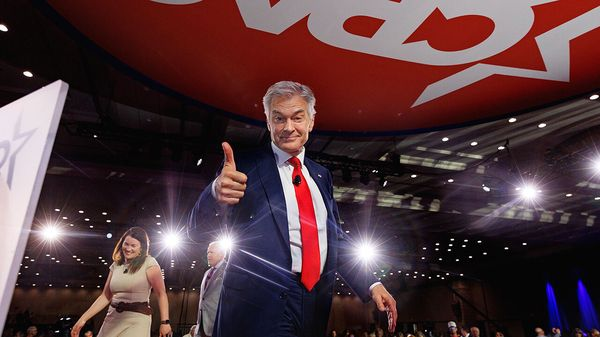

Jul 09, 2026 05:23 AM

Few stunts were too bonkers for “The Dr Oz Show”, a TV programme, notionally on health, which ran from 2009 to 2022. Mediums and mentalists were regular visitors and quackery was common, with segments on green-coffee extract and raspberry ketone supplements. Mehmet Oz, the host, documented his own colonoscopy. The show was much loved, at its height getting 3m viewers a day.
None of this primed health-care wonks to be pleased when Donald Trump nominated Dr Oz as administrator of the Centres for Medicare and Medicaid Services (CMS), among the most important roles in Washington. Like Pete Hegseth, a former TV commentator appointed secretary of war, and Dan Bongino, a conservative podcaster turned deputy director of the FBI, Dr Oz seemed an odd choice for a serious job. The CMS administrator’s duties include running Medicare, the health-insurance programme for the old, and Medicaid, the programme for the poor. Dr Oz oversees $1.6trn in annual payments and the health care of nearly two in five Americans.
But 14 months in, Dr Oz has emerged as one of Mr Trump’s most effective lieutenants, advancing the president’s priorities with competence and zeal. On June 29th Democrat-run states sued to challenge his implementation of health-care cuts for being too aggressive. On June 30th a New York fraud unit learned it would not receive federal money because it was being too soft. While other health agencies are plagued by turmoil, Dr Oz’s CMS is reshaping swathes of American health care.
His propensity for videoed colonoscopies might, understandably, obscure other qualifications for his current role. He studied at Harvard and the University of Pennsylvania before becoming a heart surgeon. High-profile transplants gave him a springboard into his second career, as the man whom Oprah Winfrey crowned “America’s Doctor”. He ran for the Senate in Pennsylvania in 2022 and lost, amid criticism that he was out of touch.
But at CMS Dr Oz has hit his stride, energetically implementing the president’s agenda: cutting Medicaid, slashing drug prices and cracking down on fraud. Together these add up to a mishmash of policies that limit some Americans’ access to care, expand it for others and provide ample opportunity for Mr Trump to put pressure on states of his choosing.
Having lobbied Congress for the Medicaid cuts in the One Big Beautiful Bill Act (OBBBA), Dr Oz is not just enacting the reductions but often stretching the interpretation of the law. For instance, OBBBA requires many Medicaid recipients to work 80 hours a month. But new rules from CMS are stricter than many states expected, prompting the lawsuit on June 29th.
Americans with other forms of health insurance, meanwhile, stand to benefit from Dr Oz and the president’s agenda. CMS has bypassed traditional rulemaking to cajole businesses, securing a promise from insurers to cut the number of treatments that require insurance reviews. Dr Oz has lobbied pharmaceutical firms to include more of their drugs on TrumpRx, the administration’s marketplace for cut-price medicine. Separately, on July 1st CMS launched a pilot to let some Americans on Medicare get GLP-1 medications for $50 a month. Nearly 4m people may qualify.
Dr Oz’s crusade against health-care fraud makes use of different skills, and follows a particularly Trumpian pattern: identify a problem that is real but difficult to quantify, then unleash enforcement that, according to opponents, seems political. This CMS administrator is surely the first to invite the press on armed stings targeting alleged fraudsters. He accused the “Russian-Armenian mafia” of running “quite a bit” of fraud in Los Angeles, prompting Gavin Newsom, California’s governor, to file a civil-rights complaint. (Dr Oz responded on X that Mr Newsom “will do literally anything to avoid talking about the rampant Medicare fraud in his state”.)
In April Dr Oz sent letters to all 50 governors instructing them to check providers in “high-risk” areas for fraud, warning “that failure to do so will be considered as we evaluate the likelihood of fraud in each state”. This was not an empty threat. CMS has used concerns about fraud to attempt to delay $1.6bn of Medicaid spending in California and Minnesota, requiring the states to provide additional information before paying out. Tim Walz, Minnesota’s Democratic governor, accused the Trump administration of exploiting fraud as part of a “campaign of retribution”.
For the president’s critics, Dr Oz’s efficiency is unsettling. At other agencies, poor execution and a disdain for the workings of government have sometimes frustrated the president’s agenda. Dr Oz, though, talks to his predecessors, and has hired and promoted people with relevant experience. “He’s probably been the most prepared CMS administrator of any that I know of,” says Andy Slavitt, who oversaw CMS under Barack Obama.
Mark McClellan, a CMS administrator under George W. Bush who receives calls from Dr Oz, notes that this is “different than the way leadership at some of the other [health] agencies has played out”. Due to a time limit on interim appointments, the Centres for Disease Control is without an acting director. The Food and Drug Administration has lost its commissioner, seemingly in a spat about e-cigarettes. Even the post of surgeon-general, typically a PR job, is on its third nominee. If the churn continues, Dr Oz’s unique skills may land him an even larger role. ■
Stay on top of American politics with The US in brief, our daily newsletter with fast analysis of the most important political news, and Checks and Balance, a weekly note that examines the state of American democracy and the issues that matter to voters.